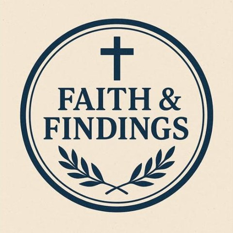

Keep pushing one more day. Don’t give up in God.
Community Covenant walks with you through thirty days of fasting, prayer, Scripture and movement — with a page that is yours every day, and people who read it.
A fresh scripture every morning, with a second verse, the Apocrypha, the Quran and a plain “what does this mean?”
Log your walk, who walked with you, and a photo. Simple workouts matched to your age and energy.
Four gratitudes, a revelation, and a message of love to someone who needs it today.
Seal your day and it becomes a beautiful page in your own private folder, ready to keep or share.
You should never have to wonder whether anyone read what you wrote. Now you will know the same day.
Seal your log or write in any part of the app, and you get a personal reply the same day — your questions answered, plus a deeper reading and encouragement.
Ask anything: a word, a verse, a hard question about marriage, forgiveness or faith. You get an answer grounded in Scripture right away.
An open door, any time. Prayer requests, questions, or you just need to talk — a real person on our team reads every message.
The app reminds you to take a break, then gives you a minute to breathe and something short to watch, all matched to your age, your interests and where you are in your covenant.
Short text-message skits where every reply is Scripture, plus Texting a Wise Friend for real-life questions.
Characters act out faith in everyday life, like the Accuser and the Advocate, payday and screen time, in natural voices.
Short messages from Tony Evans, Charles Stanley, Sarah Jakes Roberts, T.D. Jakes, BibleProject and more, played from their own channels.
Children only see kid content: Bible-story cartoons and skits like Brave and Worry and Three Jars.
Biblical takes on what’s going on in the world: history, language, migration and Scripture. Come read, ask and talk with us.

Faith and Findings ForumPublic group on Facebook · anyone can joinJoin the group →▶ Watch: a walk through Wisdom Reels and the music inside the app (on Facebook)
Right on the welcome screen — no sign-in, no questions — tap Watch & listen with gospel music. Scripture and encouragement are read aloud to you while gospel music plays. Set the phone down and let your heart rest.
Open and press play“I was so weak and so overwhelmed that I couldn’t sleep. I couldn’t even get into the app — I didn’t have the strength to answer one question. But I could press play. I set the phone down and listened to the Word of God and the music until my heart rested, and I found peace — and went back to sleep.”
“He giveth his beloved sleep.” — Psalm 127:2
“Two are better than one… For if they fall, the one will lift up his fellow.”Ecclesiastes 4:9–10
No. Community Covenant is free, and it always will be. Any future way to give to the ministries we serve will be optional and will never block anything.
Yes — any phone, tablet or computer with a browser. If you opened this from Facebook, everything works there too; to install it, tap the … menu and choose Open in browser.
Your entries are kept in your own private folder. Only you and our care team can see them, so we can reply and pray with you. We never sell your information.
Daily replies and Ask for Help answers are prepared with an AI writing assistant, guided by Scripture and our team, so you hear back the same day. Anything that sounds like you are hurting goes straight to a real person on our team. Team chat is always answered by a person.
Yes. Children, teens, young adults and grown-ups each get content made for their age, and families can walk the covenant together.
Someone is glad you’re here.
Start my covenant — free